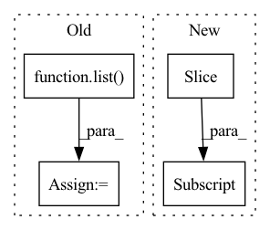

Pattern ID :7386
Before Change
rows_to_calc_neighbors_for = \
np.argwhere([x in indices_to_calc_neighbors_for for x in data.index]).flatten()
else:
rows_to_calc_neighbors_for = list( range(num_samples))
num_indices_to_calc = len(rows_to_calc_neighbors_for)
distances, indexes = np.zeros((num_indices_to_calc, num_neighbors)), np.zeros((num_indices_to_calc, num_neighbors))After Change
numeric_samples_to_calc_neighbors_for = numeric_data[num_samples:]
cat_samples_to_calc_neighbors_for = cat_data[num_samples:]
numeric_data = numeric_data[:num_samples]
cat_data = cat_data[:num_samples]
else:
numeric_samples_to_calc_neighbors_for = numeric_data
cat_samples_to_calc_neighbors_for = cat_dataIn pattern: SUPERPATTERN
Frequency: 4
Non-data size: 4
Instances Fragment ID: 24576295
Project Name: deepchecks/deepchecks
Commit Name: e9b85cbcf3518ab440a10f9198953b75108a97fb
Time: 2022-08-31
Author: 92314933+nirhutnik@users.noreply.github.com
File Name: deepchecks/utils/gower_distance.py
M Class Name: AnonimousClass
N Class Name: AnonimousClass
M Method Name: calculate_nearest_neighbors_distances(5)
N Method Name: calculate_nearest_neighbors_distances(5)
M Parent Class:
N Parent Class:
M File Name: deepchecks/utils/gower_distance.py
N File Name: deepchecks/utils/gower_distance.py
M Start Line: 59
M End Line: 117
N Start Line: 59
N End Line: 130
Before Change
node_set = set(range(data.num_nodes))
outlier_idx = np.random.choice(list( node_set) , size=n, replace=False)
candidate_set = node_set.difference(set(outlier_idx))
candidate_idx = np.random.choice(list(candidate_set), size=n * k)
for i, idx in enumerate(outlier_idx):
cur_candidates = candidate_idx[k * i: k * (i + 1)]After Change
// the first n nodes are selected as outliers, and the rest are candidates
selected_idx = torch.multinomial(torch.range(data.num_nodes),
size=n * (k + 1))
outlier_idx = selected_idx[:n]
candidate_idx = selected_idx[n:]
for i, idx in enumerate(outlier_idx):
cur_candidates = candidate_idx[k * i: k * (i + 1)] Fragment ID: 24576292
Project Name: pygod-team/pygod
Commit Name: 6bf0224f28a141d635b7c9f6029fc0a041d88791
Time: 2023-03-25
Author: kayzliu@kays-mbp-2.ececs.uic.edu
File Name: pygod/generator/outlier_generator.py
M Class Name: AnonimousClass
N Class Name: AnonimousClass
M Method Name: gen_contextual_outliers(4)
N Method Name: gen_contextual_outliers(4)
M Parent Class:
N Parent Class:
M File Name: pygod/generator/outlier_generator.py
N File Name: pygod/generator/outlier_generator.py
M Start Line: 139
M End Line: 145
N Start Line: 135
N End Line: 141
Before Change
def split_considering_timestamp(df_list, threshold_time_stamp):
df_train = list()
df_val = list()
for df in df_list:
if df["ds"].max() < threshold_time_stamp:
df_train.append(df.reset_index(drop=True))After Change
split_idx_train = n_train + n_lags + n_forecasts - 1
split_idx_val = split_idx_train - n_lags if inputs_overbleed else split_idx_train
df_train[key] = df.copy(deep=True).iloc[:split_idx_train].reset_index(drop=True)
df_val[key] = df.copy(deep=True).iloc[split_idx_val:] .reset_index(drop=True)
return df_train, df_val
Fragment ID: 24576306
Project Name: ourownstory/neural_prophet
Commit Name: 6619741f934957dff2a7fa4ff66620772d41471f
Time: 2022-02-14
Author: ourownstory@users.noreply.github.com
File Name: neuralprophet/df_utils.py
M Class Name: AnonimousClass
N Class Name: AnonimousClass
M Method Name: split_considering_timestamp(5)
N Method Name: split_considering_timestamp(2)
M Parent Class:
N Parent Class:
M File Name: neuralprophet/df_utils.py
N File Name: neuralprophet/df_utils.py
M Start Line: 500
M End Line: 510
N Start Line: 526
N End Line: 552
Before Change
query_idx = list(map(lambda x: find_pattern(x[0], x[1]), zip(search_queries, input_ids.tolist())))
if isinstance(layer, list):
representations = list( map(lambda x: x[torch.arange(num_inputs)[:, None], query_idx].mean(1), hidden_states))
else:
if layer != "all":
if layer is None:
layer = self.layersAfter Change
elif layer > self.layers:
raise ValueError(f"Number of layers specified ({layer}) exceed layers in model ({self.layers})!")
// representations = hidden_states[torch.arange(num_inputs)[:, None], query_idx].mean(1)
representations = torch.stack([hs.squeeze()[idx[0]:idx[1]] .mean(0) for hs, idx in zip(hidden_states.split([1] * num_inputs), query_idx)])
return representations
Fragment ID: 24576305
Project Name: kanishkamisra/minicons
Commit Name: b9f76e2dfc167677a5e1a4877b8bc76799a01974
Time: 2021-08-21
Author: menogetusername@gmail.com
File Name: minicons/cwe.py
M Class Name: CWE
N Class Name: CWE
M Method Name: extract_representation(3)
N Method Name: extract_representation(3)
M Parent Class: object
N Parent Class: object
M File Name: minicons/cwe.py
N File Name: minicons/cwe.py
M Start Line: 109
M End Line: 132
N Start Line: 110
N End Line: 132